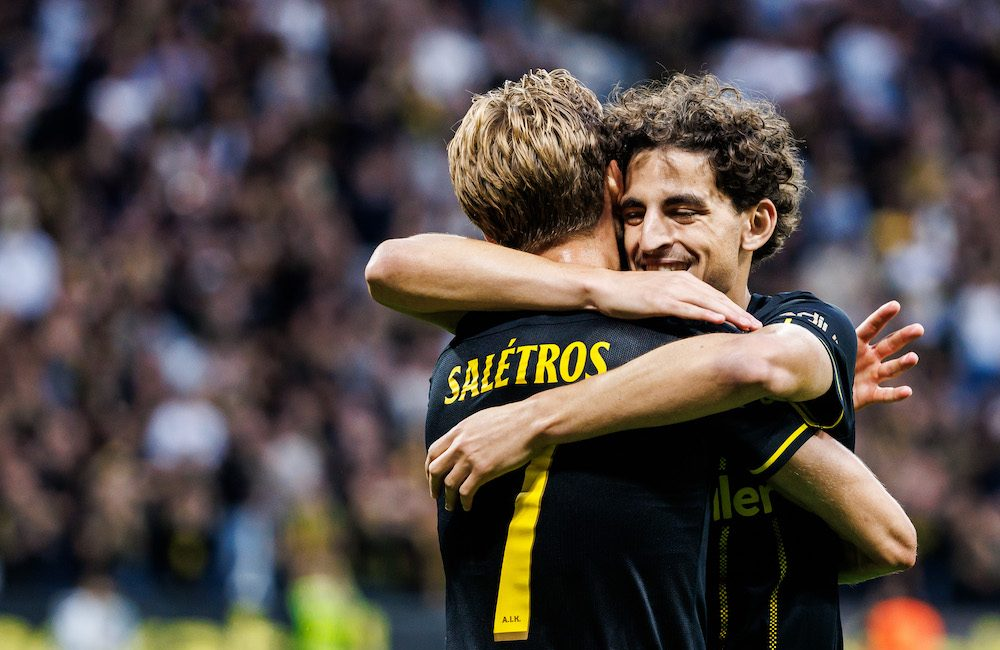

Stötta din klubb
Genom att bli medlem i AIK blir du en officiell del av Sveriges största idrottsförening. Ditt stöd är grunden för vår fortsatta framgång.
Genom att bli medlem i AIK blir du en officiell del av Sveriges största idrottsförening. Ditt stöd är grunden för vår fortsatta framgång.
Som medlem får du inte bara rösträtt på årsmötet och möjlighet att påverka klubbens framtid, du får också exklusiva erbjudanden, förtur till biljettsläpp och medlemstidningen direkt i brevlådan.

Vi har alternativ för alla åldrar. Från "Knattemedlem" för de allra minsta till "Ständig medlem" för dig som vet att hjärtat alltid kommer att bulta för svart och gult.

Att vara medlem i AIK handlar om mer än bara fördelar – det handlar om att visa färg och stå upp för klubben i både med- och motgång.
